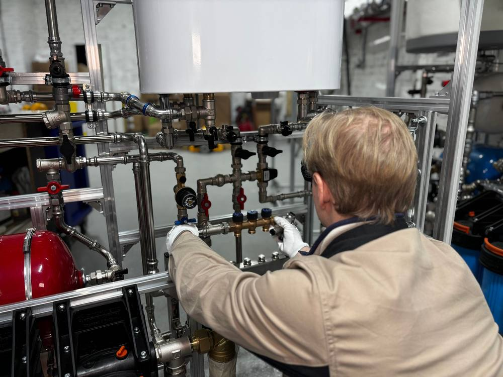
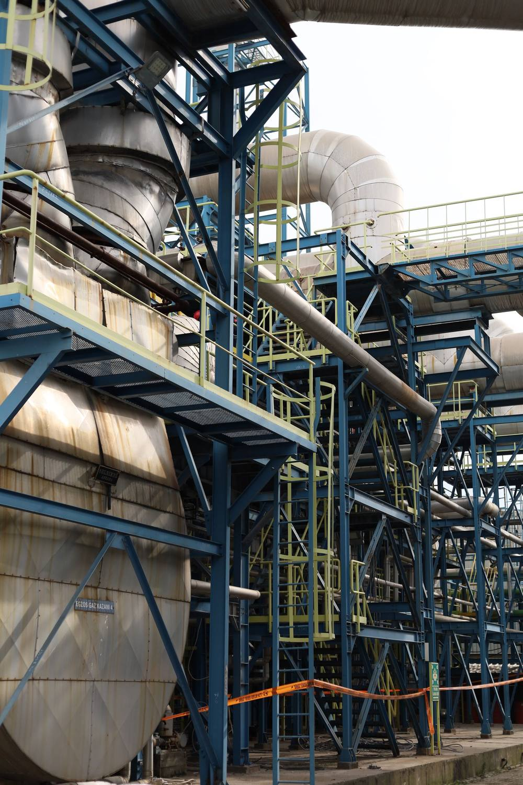
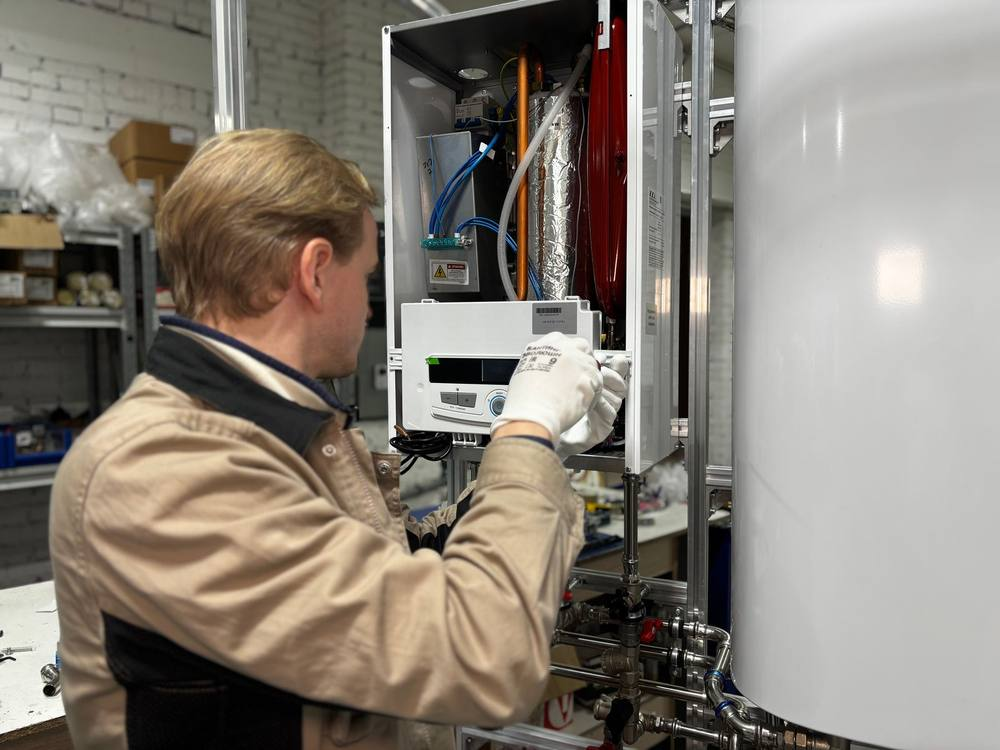

The challenge
A hospital boiler plant is not a system you can switch off while you rework it. The Albany plant runs high-pressure steam for two very different jobs at once: process loads like sterilization, the kitchen, humidification and laundry, and building heat through steam convectors and heating hot water. Lose it and the campus loses far more than warmth.
The equipment behind that job had aged well past its service life. The original primary boilers were three 900 HP dual-fuel steam water-tube boilers operating at 120 psig, with a newer 400 HP firetube steam boiler added in 2009. The plant structure itself dates to the 1940s. Replacing the primary boilers meant working inside a live, decades-old plant without interrupting the steam the hospital depends on.
What we did
Alares serves as the prime designer, providing the architectural, mechanical, structural and project-management design, along with fire alarm design, to replace the aging primary boilers with modern high-efficiency units. The work sits squarely on VA design guidelines, and the documentation was built to meet them precisely.
The scope grew beyond the boilers themselves. At the VA's request, Alares added an electrical upgrade of the 13.2 kV switchgear and the associated 480V transformers, giving reliable power to both the chiller plant and the central boiler plant. The project also added a new backup generator for the boiler plant, so the campus keeps power to its most critical infrastructure when it matters most.
A model built before the design
You cannot responsibly redesign a plant this old off its original drawings. Alares built a full 3D Revit model of the existing boiler plant and all of its piping before designing the replacement. That model sharpened the quality and readability of the construction documents, which is what keeps a contractor out of trouble once the work is underway.
Catching problems without a change order
The quieter value came from investigation and coordination. The project required extensive survey of the existing steam and condensate piping and the plant equipment, and Alares stayed in constant contact with the Albany VA engineering team to confirm every local and federal VA requirement was met. That communication kept newly discovered existing conditions from blowing up the scope. In one case, Alares identified and corrected a boiler plant chimney stack that was not meeting air quality requirements, and resolved it without a change order.
The team
Alares LLC, a Service-Disabled Veteran-Owned Small Business out of Quincy, MA, led as prime for the mechanical, architectural and structural design. NV5 of Andover, MA handled electrical and fire protection, Mabbett, also an SDVOSB, of Stoneham, MA covered civil engineering and asbestos testing, and YA Group of Blasdell, NY provided cost estimating.
Where it stands
The design is delivered and the project is in construction. Alares is currently providing construction-period services, reviewing submittals, answering RFIs and checking shop drawings, so the plant that gets built matches the plant that was designed. It is a clear example of how thorough existing-conditions work, an accurate model and steady owner coordination carry a complex infrastructure job from a 1940s plant to a modern one without losing a day of steam.


